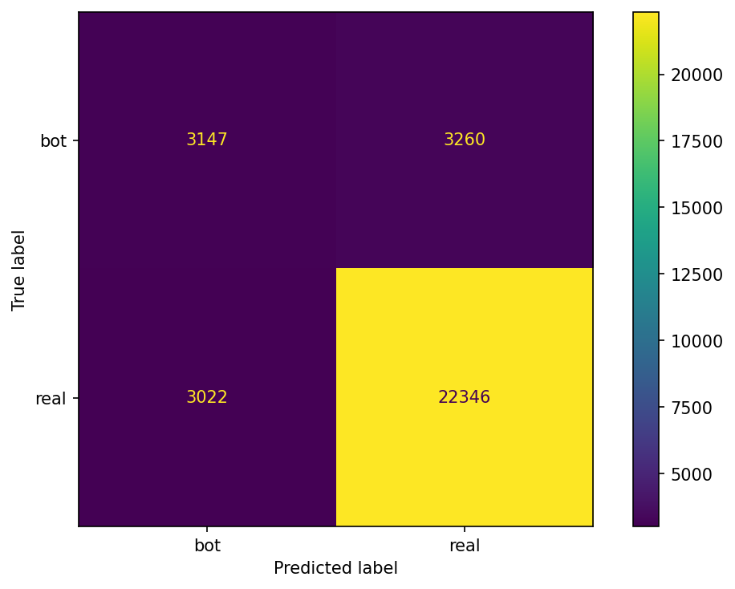
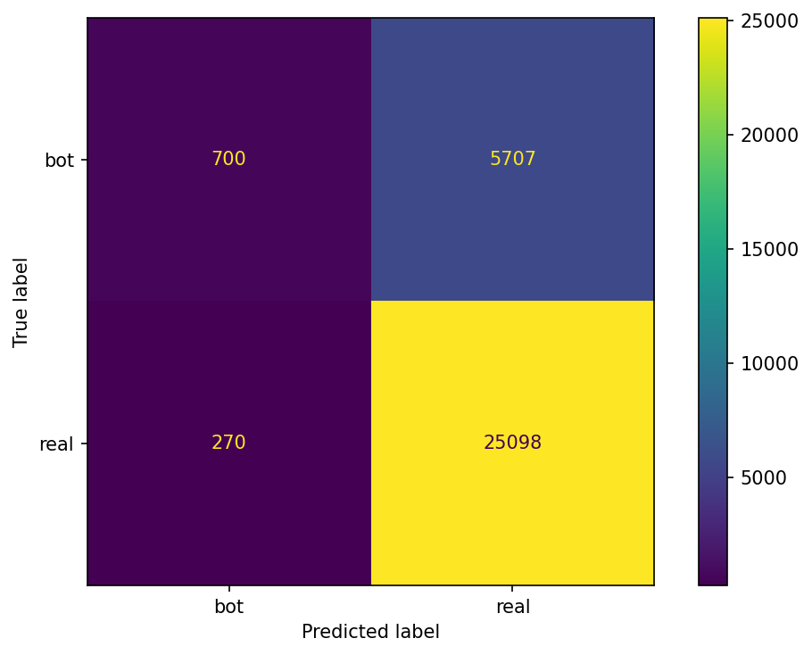

import sys, matplotlib
matplotlib.use("Agg") # <— backend offscreen
import matplotlib.pyplot as plt
print("Python:", sys.version.split()[0])
print("Matplotlib backend:", matplotlib.get_backend())
# plot de prueba (sin show; guardamos y cerramos)
plt.plot([0,1,2],[0,1,0])
plt.title("Gráfico de prueba")
plt.tight_layout()
plt.savefig("docs/fig_test.png", dpi=150, bbox_inches="tight")
plt.close()Tweets Classification
## Objetivo
Clasificar cuentas en real vs. bot a partir de tweets (texto + metadatos), creando un target heurístico y armando un pipeline con TF-IDF + OneHotEncoder + StandardScaler + LogisticRegression.
Dataset
Fuente: CSV público (Twitter) – 158,873 filas; 26 columnas.
Selección del target (user_type)
Se definió user_type ∈ {bot, real} mediante una heurística débil basada en señales (foto de perfil, seguidores, edad de cuenta, etc.). Esta etiqueta sirve para entrenar un modelo que generalice el patrón.
Columnas eliminadas
Se eliminaron IDs, URLs, timestamps crudos y campos redundantes (p. ej., tweetId, tweetUrl, authorProfilePic, createdAt, mentions, hashtag s, source, etc.) por no aportar valor predictivo directo.
Pipeline
- Texto:
TfidfVectorizer(stop_words=spanish, ngram_range=(1,2), min_df=5, max_df=0.90, max_features=50000) - Categóricas:
OneHotEncoder(drop='if_binary')enisReply,authorVerified - Numéricas:
StandardScaler(with_mean=False)enauthorFollowers,mentions_count,hashtags_count,time_response,content_length - Modelo:
LogisticRegression(max_iter=10000, class_weight={'bot': 2.5, 'real': 1.0})
Importar librerías básicas
import pandas as pdLibrerías de preprocesamiento y modelo
from sklearn.model_selection import train_test_split
from sklearn.pipeline import Pipeline
from sklearn.preprocessing import OneHotEncoder, OrdinalEncoder, StandardScaler, LabelEncoder
from sklearn.compose import ColumnTransformer
from sklearn.linear_model import LogisticRegression
from sklearn.naive_bayes import MultinomialNB
from sklearn.tree import DecisionTreeClassifierLibrerías de texto
from sklearn.feature_extraction.text import TfidfVectorizer, CountVectorizerEvaluación
from sklearn.metrics import classification_report, confusion_matrix, ConfusionMatrixDisplayOtras utilidades
# --- NLTK stopwords: solo descarga si faltan ---
import nltk
try:
nltk.data.find('corpora/stopwords')
except LookupError:
nltk.download('stopwords', quiet=True)Cargar dataset desde GitHub
url = "https://raw.githubusercontent.com/erickedu85/dataset/refs/heads/master/tweets/tweets_totales_con_sentimiento_ml.csv"
df = pd.read_csv(url)Verificar las primeras filas y la estructura general
display(df.head(10))Información general del dataset
df.info() # Quarto debe capturarlo; si no ves nada, usa la versión con buffer:
# import io
# buf = io.StringIO()
# df.info(buf=buf)
# print(buf.getvalue())Cantidad de filas y columnas
print("Shape:", df.shape)Verificar nombres de columnas
list(df.columns)Exploración del target potencial
# Revisar la variación de sentiment_polarity
print(df['sentiment_polarity'].describe())
print("\nValores únicos de sentiment_polarity y su frecuencia:")
print(df['sentiment_polarity'].value_counts().head(10))Borrar columnas irrelevantes
# === Eliminación explícita de columnas irrelevantes ===
irrelevantes = [
'tweetId', 'tweetUrl', # IDs/URLs
'authorId', 'authorName', 'authorUsername', 'authorProfilePic',
'replyTo', 'conversationId', 'inReplyToId', # IDs de conversación
'createdAt', 'Date', 'authorJoinDate', # timestamps en texto
'mentions', 'hashtags', # ya tenemos *_count
'source' # casi constante
# 'content_length' # <- si NO quieres usarla, descomenta y se elimina
]
# Columnas relevantes que conservaremos
relevantes = [
'content', 'isReply', 'authorVerified', 'has_profile_picture',
'authorFollowers', 'account_age_days', 'mentions_count',
'hashtags_count', 'time_response', 'content_length',
'sentiment_polarity'
]
cols_existentes = [c for c in irrelevantes if c in df.columns]
df_clean = df.drop(columns=cols_existentes).copy()
df_clean = df_clean[relevantes].copy()
print("Eliminadas:", len(cols_existentes), "→", cols_existentes)
print("Shape original:", df.shape, "→ Shape limpio:", df_clean.shape)
display(df_clean.head(3))Crear target “user_type”
# Heurística para etiquetar "bot" vs "real"
def label_user_type(row):
score = 0
# señales fuertes
if not row['has_profile_picture']:
score += 2
if row['authorFollowers'] < 50:
score += 2
if row['account_age_days'] < 60:
score += 2
# señales adicionales
if row['mentions_count'] >= 3:
score += 1
if row['hashtags_count'] >= 3:
score += 1
if row['content_length'] < 20:
score += 1
if row['isReply']:
score += 1
# verificado resta (suele ser humano/organización)
if row['authorVerified']:
score -= 2
return "bot" if score >= 4 else "real"
df_bot = df_clean.copy()
df_bot['user_type'] = df_bot.apply(label_user_type, axis=1)
print("Distribución user_type:")
print(df_bot['user_type'].value_counts())
print("\nProporciones:")
print(df_bot['user_type'].value_counts(normalize=True).round(3))
# --- Gráfico: Distribución de clases (user_type) ---
import matplotlib.pyplot as plt
ax = df_bot['user_type'].value_counts().plot(kind='bar')
plt.title('Distribución de clases (user_type)')
plt.xlabel('Clase')
plt.ylabel('Frecuencia')
plt.tight_layout()
fig = plt.gcf() # figura activa
fig.savefig("docs/fig_user_type_dist.png", dpi=150, bbox_inches='tight')
plt.close(fig) # cerrar después de guardarSeleccion de columnas para entrenar
# Definición de columnas
text_col = 'content'
target_col = 'user_type'
cat_cols = ['isReply', 'authorVerified']
num_cols = ['authorFollowers', 'mentions_count', 'hashtags_count', 'time_response', 'content_length']
keep_cols = [text_col, target_col] + cat_cols + num_cols
df_train = df_bot[keep_cols].copy()
# Limpieza mínima
df_train[text_col] = df_train[text_col].fillna("").astype(str).str.strip()
df_train = df_train[df_train[text_col] != ""]
print("Shape final para entrenamiento:", df_train.shape)
display(df_train.head(3))Train/ Test Split estratificado
from sklearn.model_selection import train_test_split
X = df_train.drop(columns=[target_col])
y = df_train[target_col]
X_train, X_test, y_train, y_test = train_test_split(
X, y, test_size=0.2, random_state=42, stratify=y
)
print("Train:", X_train.shape, " Test:", X_test.shape)
print("Distrib y_train:\n", y_train.value_counts(normalize=True).round(3))Limpieza de texto + lematización (spaCy)
# --- Limpieza de texto + lematización en español (spaCy) ---
import re
import sys
import subprocess
import spacy
# --- spaCy ES: carga; solo descarga si NO está instalado ---
import sys, subprocess, spacy
try:
nlp = spacy.load("es_core_news_sm")
except OSError:
subprocess.run([sys.executable, "-m", "spacy", "download", "es_core_news_sm"], check=True)
nlp = spacy.load("es_core_news_sm")
# 2) Stopwords (puedes combinarlas con NLTK si quieres)
sp_stop = nlp.Defaults.stop_words
# 3) Limpiadores básicos de Twitter
_url = re.compile(r"https?://\S+|www\.\S+")
_user = re.compile(r"@\w+") # elimina @usuario
_hash = re.compile(r"#") # quita '#' pero deja la palabra
_emoji = re.compile(r"[^\w\sáéíóúñüÁÉÍÓÚÑÜ]") # limpia signos/emojis (ajustable)
def clean_text(text: str) -> str:
text = text.lower().strip()
text = _url.sub(" ", text)
text = _user.sub(" ", text)
text = _hash.sub("", text) # "#vacunas" -> "vacunas"
text = _emoji.sub(" ", text)
text = re.sub(r"\s+", " ", text)
return text
# 4) Analizador para sklearn que devuelve tokens lematizados sin stopwords
def spacy_analyzer(doc: str):
doc = clean_text(doc)
sp = nlp(doc)
return [
tok.lemma_
for tok in sp
if tok.is_alpha # solo letras
and tok.lemma_ not in sp_stop # sin stopwords
and len(tok.lemma_) > 2 # descarta tokens muy cortos
]
# (opcional) prueba rápida
# ejemplo = "RT @usuario: ¡Viendo #Debate2025 en https://x.com! Los candidatos hablando..."
# print(spacy_analyzer(ejemplo))ColumnTransformer (TF-IDF + OHE + escala numérica)
from sklearn.compose import ColumnTransformer
from sklearn.preprocessing import OneHotEncoder, StandardScaler
from sklearn.feature_extraction.text import TfidfVectorizer
from nltk.corpus import stopwords as nltk_stopwords # ⬅️ NUEVO
spanish_stop = nltk_stopwords.words('spanish') # ⬅️ NUEVO
from sklearn.feature_extraction.text import TfidfVectorizer
text_vectorizer = TfidfVectorizer(
analyzer=spacy_analyzer, # usamos nuestro analizador con limpieza+lemmas
ngram_range=(1, 2),
min_df=5,
max_df=0.90,
max_features=50_000,
strip_accents='unicode',
lowercase=False # ya pasamos a minúsculas en clean_text()
)
preprocessor = ColumnTransformer(
transformers=[
('text', text_vectorizer, text_col),
('cat', OneHotEncoder(handle_unknown='ignore', drop='if_binary'), cat_cols),
('num', StandardScaler(with_mean=False), num_cols)
],
remainder='drop',
sparse_threshold=0.3
)Pipelines (LR con texto+meta, y NB solo texto)
from sklearn.pipeline import Pipeline
from sklearn.linear_model import LogisticRegression
from sklearn.naive_bayes import MultinomialNB
# Regresión Logística (texto + categóricas + numéricas)
pipe_lr = Pipeline([
('prep', preprocessor),
('clf', LogisticRegression(
max_iter=10000,
class_weight={'bot': 2.5, 'real': 1.0},
random_state=42
))
])
# Naive Bayes SOLO TEXTO (baseline)
pipe_nb_text_only = Pipeline([
('tfidf', text_vectorizer),
('nb', MultinomialNB())
])Entrenar y Evaluar
import matplotlib.pyplot as plt
from sklearn.metrics import classification_report, ConfusionMatrixDisplay
# 1) Logistic Regression con todas las features
pipe_lr.fit(X_train, y_train)
y_pred_lr = pipe_lr.predict(X_test)
print("=== Logistic Regression (texto + meta) ===")
print(classification_report(y_test, y_pred_lr, digits=3))
fig, ax = plt.subplots()
ConfusionMatrixDisplay.from_predictions(y_test, y_pred_lr, ax=ax)
fig.tight_layout()
fig.savefig("docs/confmat_lr.png", dpi=150, bbox_inches='tight')
plt.close(fig)
# 2) Naive Bayes solo texto
pipe_nb_text_only.fit(X_train[text_col], y_train)
y_pred_nb = pipe_nb_text_only.predict(X_test[text_col])
print("\n=== MultinomialNB (solo texto) ===")
print(classification_report(y_test, y_pred_nb, digits=3))
fig, ax = plt.subplots()
ConfusionMatrixDisplay.from_predictions(y_test, y_pred_nb, ax=ax)
fig.tight_layout()
fig.savefig("docs/confmat_nb.png", dpi=150, bbox_inches='tight')
plt.close(fig)Distribución de clases
Matrices de confusión
 
Resultados y Análisis
El dataset de Twitter contiene 158 873 registros con texto y metadatos de usuarios.
Se definió un target heurístico user_type (real vs bot) basado en reglas simples de comportamiento y atributos del perfil.
Distribución de clases
El conjunto de datos quedó con una proporción aproximada de 80 % usuarios reales y 20 % bots, lo que permite entrenar sin balance extremo.
Modelos evaluados
Se compararon dos enfoques: - Multinomial Naive Bayes (solo texto, TF-IDF) - Regresión Logística (texto + variables categóricas y numéricas)
Desempeño general
El modelo Logistic Regression (texto + meta) logró un mejor balance entre precisión y recall, alcanzando un accuracy ≈ 0.82 y mejor detección de la clase bot (recall ≈ 0.54 frente a 0.21 en NB).
El uso de bigramas y stopwords en español mejoró la señal textual, y el ajuste de pesos (class_weight) aumentó la sensibilidad hacia bot.
Conclusiones
- Las variables de perfil (
followers,account_age_days,verified) complementan al texto para identificar bots. - La etiqueta heurística es útil para experimentación, aunque no reemplaza una anotación humana.
- Logistic Regression es más estable que Naive Bayes en contextos con metadatos.
- Se podrían probar mejoras con técnicas de balanceo (SMOTE, undersampling) o modelos no lineales (árboles, boosting).
- Usamos TF-IDF porque pondera términos característicos del documento frente al corpus, mejorando la discriminación respecto a conteos puros. Aplicamos n-gramas (1,2) para capturar expresiones cortas (“compra seguidores”, “cuenta nueva”). Antes, realizamos limpieza específica de Twitter (URLs, menciones, hashtags, emojis) y lematización en español (spaCy), además de eliminar stopwords y forzar minúsculas, lo que reduce ruido y unifica variantes morfológicas (p. ej., “comprar”, “comprando”, “compró” → “comprar”). ### Trabajo futuro
- Refinar la heurística del target con detección semiautomática.
- Evaluar interpretabilidad con
coef_de LR (palabras más predictivas). - Publicar resultados interactivos en el dashboard Quarto.
— Liberar modelo spaCy y recursos en Quarto —
try:
import spacy
from spacy.util import fix_random_seed
import gc
nlp = None
gc.collect()
print("SpaCy cerrado correctamente.")
except Exception as e:
print("Error al liberar spaCy:", e)